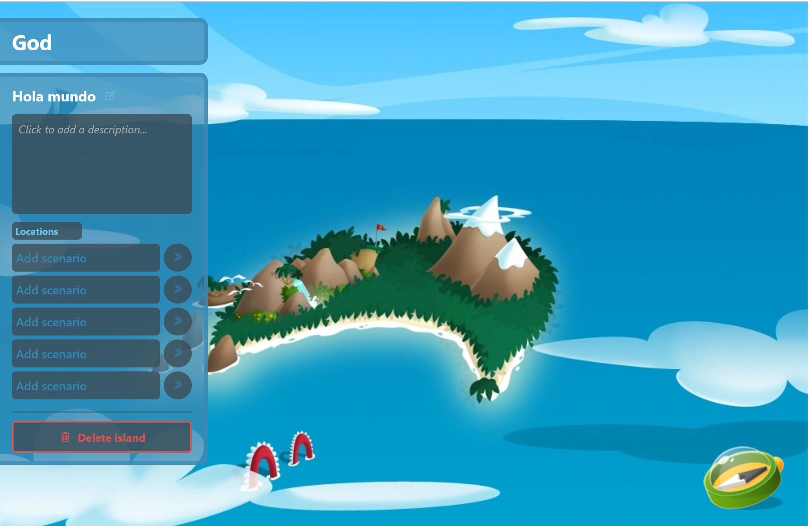

Beluga Beach
Playa y encuentros.
Sin datos de ocupaciónUn vistazo a escenarios conocidos del universo BoomBang y a los sistemas incluidos en el cliente HTML5.
Playa y encuentros.
Sin datos de ocupaciónUn rincón para conversar.
Sin datos de ocupaciónUn lugar entre árboles.
Sin datos de ocupaciónEncuentros y minijuegos.
Sin datos de ocupaciónUna aventura misteriosa.
Sin datos de ocupaciónEspacios creados por jugadores.
Sin datos de ocupaciónNo encontramos áreas con ese nombre.
Qué está implementado, pruebas de GitHub y tareas pendientes para lanzar la web.
Consultar avances →Solicitudes de amistad y grupos con invitación. Se requiere iniciar sesión.
Gestionar mi comunidad →Consulta clasificaciones reales de la última semana registrada cuando la API esté disponible.
Ver clasificación →Acceso con sesión web protegida. El juego mantiene su autenticación propia.
Acceder →Conversaciones persistentes para usuarios registrados, separadas de las salas del juego.
Ir al chat →Consulta los objetos activos en la base de datos. Compras web desactivadas.
Ver catálogo →Publica temas, responde y participa cuando los servicios estén en marcha.
Entrar al foro →Instala y configura el cliente, servidor y API del proyecto en tu Mac.
Leer guía →
El código del juego incluye creación y decoración de islas. Conoce cómo preparar el proyecto antes de jugar.
Guía de acceso ↗